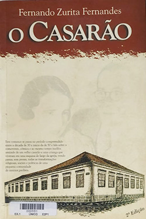

O Casarão - Fernando Zurita Fernandes
Sobre o livro:
Trata-se de um livro com pequenos capítulos sobre a vida de um menino na cidade de Araras, nas décadas de 1930/1950, relatando costumes da época, e impressôes sobre fatos políticos, como um comício de Getúlio Vargas na cidade e a segunda guerra mundial.
Imagens:
Onde Encontrar?
Estante 01, Prateleira 03, Seção F
Código do Livro
551
Outras informações:
- Número de páginas: 176;
- Autor:Fernando Zurita Fernandes;
- Editora: